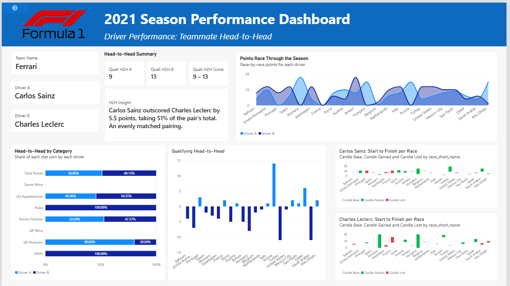
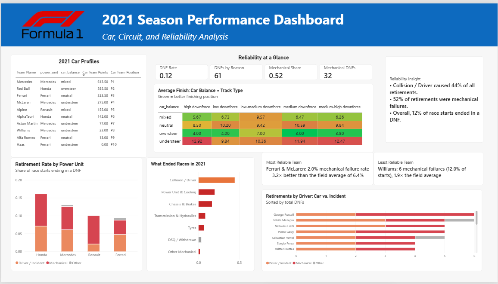

← All projects
Case study · Data & AI
2021 F1 Season Performance Dashboard
What drove the 2021 season: the driver or the car? A PostgreSQL database I designed, and a three-page Power BI report that answers it.

Key findings
8 ptsVerstappen's title margin over Hamilton
44%of retirements were collisions or incidents
12%of race starts ended in a DNF
3×Ferrari & McLaren's reliability vs. the field average
Teammate head-to-head
Teammates share a car, so the gap between them is the closest thing to a pure measure of driver skill. Right-click any driver on the first page to drill through to this comparison.

Car, circuit & reliability

How it's built
- Database: a re-runnable PostgreSQL script with master tables (stable driver, team and circuit IDs) and season tables.
- Points in SQL: a results view calculates points, including the fastest-lap rule and the half-points rule for shortened races.
- Power BI model: a star schema around the results view, with measures kept simple through 0/1 flags.
- DAX: drill-through, colour slots that stay consistent per teammate, native candlestick charts, and insight text generated from measures.
Challenges I solved
| Problem | Cause | Fix |
|---|---|---|
| Driver A and B swapped from race to race | The "higher scorer" was ranked inside each race | Ranked teammates on full-season points with REMOVEFILTERS |
| Every retirement cause showed 100% | A CALCULATE filter replaced the chart's own filter | Wrapped the condition in KEEPFILTERS |
| Retirements counted as podiums | A blank finish position was treated as 0 | Required a finish position of at least 1 |
| Team stats blank for some teams | Team keys differed between tables | Looked up the team key directly from the results view |
| Pit-lane starts drawn as "P0" | Pit-lane starts are stored as grid 0 | Treated pit-lane starts as P20 |
Next
Need a dashboard your team will actually use?
I build reports that answer a real question, not just show numbers.
Let's work together